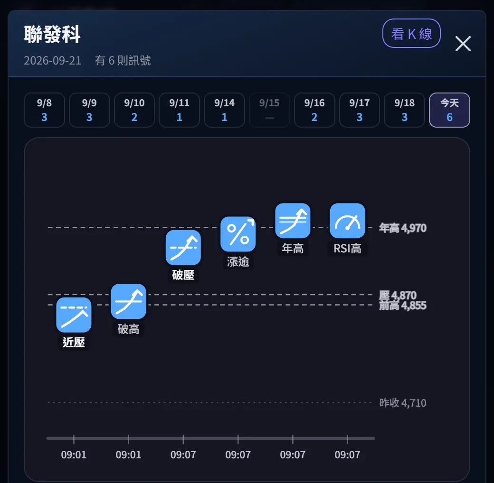
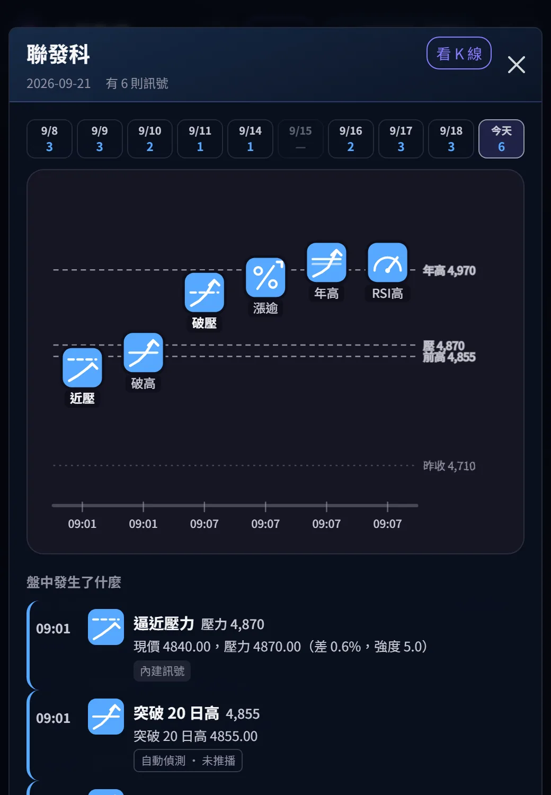
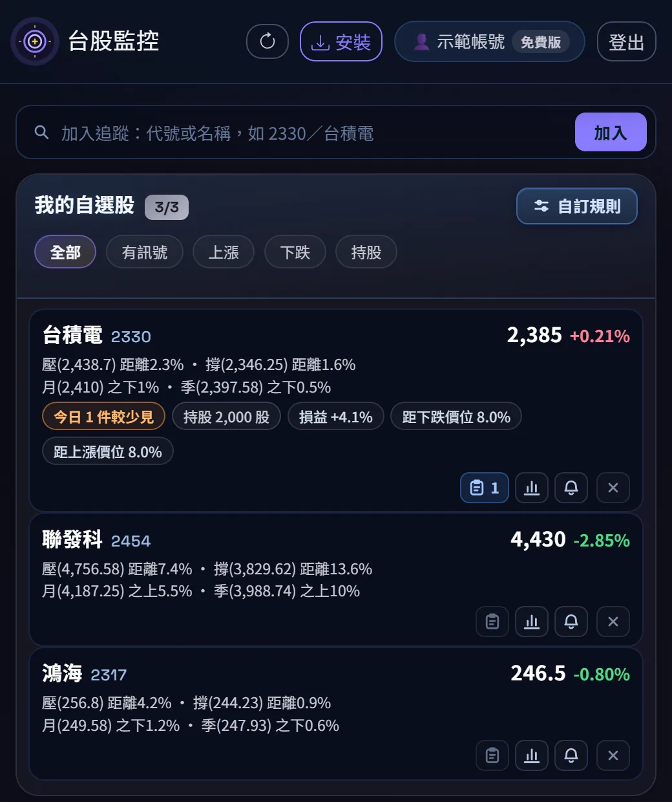
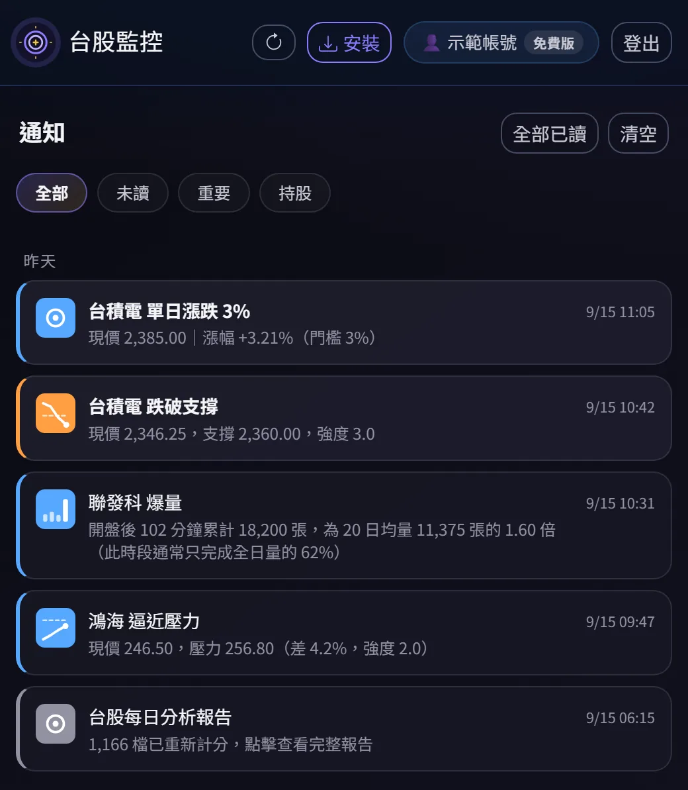
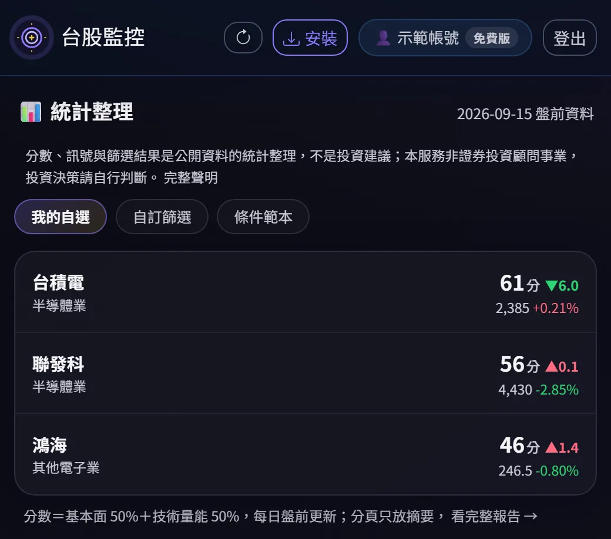

不用盯盤，也知道 09:07 發生了什麼。
09:01 聯發科離壓力還差 0.6%，系統先提醒一次；09:07 站上 4,870，通知直接推到手機。你在上班、在開會，也在同一分鐘知道。
給有正職、持股加觀察名單 5–20 檔、沒辦法整天開著看盤軟體的人。
LINE 只用來建立帳號與登入，不會傳股票訊息給你——訊號全部走手機推播，和 LINE 聊天室無關。免費方案 3 檔自選股，沒有期限。

09:07 那一分鐘，你在開會。
2026-09-21 聯發科。開盤六分鐘內系統看到六件事：09:01 先預告，09:07 推到你手機，另外四件不吵你、留在雷達裡等你有空再看。下面是 App 當天的實際畫面，用示範帳號截的。

- 109:01 開盤一分鐘價格離壓力 4,870 只差 0.6%，系統先發「逼近壓力」。這一則是預告：接下來幾分鐘值得看一眼。
- 209:07 站上 4,870「突破壓力」推到手機——是手機自己的推播通知，不是 LINE 訊息。你在開會、在通勤，手機震一下就知道，而不是收盤後才發現。
- 3同一分鐘還有三件漲幅超過 5%、突破 52 週高、RSI 高於 70 一起成立。這三件不推播、只記在雷達裡——哪幾種要吵你，由你自己設定，其餘的等你有空再看。
以上是系統對資料的描述，不是對股票的判斷，也不是買賣建議。範例來自公開的盤中資料與示範帳號，不含任何使用者的自選股。
通知走手機，不走 LINE。
很多人以為這是一個會在群組裡報明牌的 LINE 機器人。不是。LINE 只出現在最開始的三十秒，之後就退場。
只做一件事：認出你是誰
加好友的當下帳號就建立完成，LINE 立刻把「開始使用」的連結和 8 碼登入碼傳給你。不用下載、不用設密碼、不用填 Email。換手機時在聊天室傳「登入」就能重拿一組。
把 App 裝到手機桌面
CapitalGuard 是網頁應用程式（PWA），加入主畫面之後就像一般 App 一樣有圖示、全螢幕開啟。不經過 App Store，也不必手動更新。
訊號進手機的通知中心
盤中訊號、盤後事件、每日評分報告，全部由瀏覽器的 Web Push 直接送進手機通知中心，鎖定畫面就看得到。不經 LINE，不另外收費。
所以你的 LINE 聊天室不會被洗版。加好友之後，官方帳號只會傳登入與帳號相關的訊息（例如你自己要的一組新登入碼）。股票的事一律走推播通知，一則都不會出現在 LINE 裡。我們也讀不到你的聊天內容，只取得你的 LINE 顯示名稱與識別碼。
三個畫面，一天就用得到。
下面是 App 的實際畫面，不是設計稿。用一個只放三檔股票的示範帳號截的，沒有任何使用者的資料。



示範帳號的畫面，數字為擷取當下的資料，不是即時行情。
盤前、盤中、盤後，各做一件事。
不是把所有資料塞給你，而是在對的時間，只推該看的。四件事都送進 App 與手機推播，LINE 一則都不會收到。
每日評分報告
日均成交金額 500 萬以上的上市櫃股票重新計算 0–100 分，附 13 個子項分數、前期對照與變化原因。
盤中雷達
盤中持續判斷自選股是否觸及支撐壓力、爆量、漲跌停、目標價，成立就推到手機。
盤後事件
三大法人買賣超、融資融券變化與複合訊號整理成事件。一天一則，不重複。
夜間資料更新
財報、籌碼、歷史價量分批更新，隔天開盤前備妥。
一支手機，盯住你的自選股。
每日統計評分（非投資建議）
基本面 50%＋技術量能 50%，0–100 分。統計頁列出 13 個子項分數、前期對照與變化原因；排序與篩選條件由你自己設定。
盤中訊號
支撐壓力的逼近與突破、收復支撐、爆量、漲跌停、目標價。門檻依每檔股票的波動自動調整，同一檔同一輪只推一則，走手機推播不經 LINE。
自訂通知規則
價格、漲跌幅、量能、RSI、MACD、均線、法人籌碼、營收與 EPS 等 20 種條件自由組合，在 App 裡就能編輯。
持股損益與 K 線
在自選股列記錄股數與成本，App 會算出市值與未實現損益；K 線視窗標出支撐壓力關卡與今天發過的訊號。
盤後事件彙整
收盤後整理三大法人買賣超、融資融券變化與複合訊號，每則附 0–100 的顯著度，標題只描述資料。
AI 資料白話開發中
把分數變化與事件翻成白話說明。不做多空判斷、不預測走勢、不給買賣建議。
不是一個人看著幾檔股票。
下面是系統每個交易日實際在做的事，數字取自 2026-09-15 的運行結果。
- 1,166檔股票每日重新計分日均成交金額 500 萬以上的上市櫃個股
- 2,150檔可搜尋與設定通知全部上市櫃，含不計分的冷門股
- 12個評分子項基本面 5 項＋技術量能 7 項，各有前期對照
- 21種進階訊號條件價量、技術指標、法人籌碼、財報，可組合
- 09:00–13:30盤中全程判斷自選股的關卡、量能與漲跌停，在主機端持續評估
- 15 秒訊號送達手機從判定成立到推播離開伺服器
資料來自證券交易所、櫃買中心與公開資訊觀測站等公開來源，可能延遲、缺漏或有誤。
免費開始，需要再升級。
免費版與基本版只差在放得下幾檔自選股、幾條規則，其餘功能相同。月費制，隨時可以取消，本站不儲存信用卡資料。
基本版適合持股加觀察名單超過 3 檔的人：NT$49／月、30 檔自選股、10 條進階訊號。
- 30 檔自選股
- 10 條自訂通知規則
- 全部盤中、盤後通知與自訂目標價
- 每日評分報告與統計頁
- 持股損益與 K 線
專業版（AI 資料白話）開發中，上線後才開放訂閱。
三個步驟，大約三分鐘。
加好友之後，LINE 會立刻傳一則訊息給你，裡面有「開始使用」的連結和 8 碼登入碼。LINE 的任務到這裡就結束了——剩下的照你的手機做一次，之後訊號都走推播。
- 加 LINE 好友點上面的按鈕，或在 LINE 搜尋 @408csebn。加好友的當下帳號就建立完成，訊息會立刻送到。
- 點「開始使用」，把 App 裝到桌面連結會用 Chrome 開啟，照畫面提示選「安裝」或「加入主畫面」。
- 從桌面開啟，允許通知Chrome 與 App 共用登入，通常不必再輸入登入碼。允許通知之後，訊號就會送進手機的通知中心。
- 加 LINE 好友點上面的按鈕，或在 LINE 搜尋 @408csebn。加好友的當下帳號就建立完成，訊息會立刻送到。
- 用 Safari 開連結，先「加入主畫面」點下方分享鈕 → 加入主畫面。iPhone 一定要先安裝才收得到推播，需要 iOS 16.4 以上。
- 從主畫面開啟，貼上 8 碼登入碼回 LINE 點「複製登入碼」，在 App 按貼上圖示。Safari 與主畫面 App 的儲存空間不共用，所以這一步不能省。
- 加 LINE 好友用手機掃右邊的 QR，或在 LINE 電腦版搜尋 @408csebn。
- 點訊息裡的「開始使用」瀏覽器會直接登入，不需要輸入任何東西。
- 推播請在手機上安裝電腦版可以看分數、統計與 K 線。盤中訊號要推到身上，還是得在手機加入主畫面。
官方帳號 @408csebn（CapitalGuard-股票追蹤）。加好友後在聊天室傳「登入」，隨時可以重拿一組新的登入碼。
開始之前
加了 LINE 好友，會一直收到 LINE 訊息嗎？
需要下載 App 嗎？
用什麼登入？
通知怎麼送到手機？
為什麼一定要加 LINE 好友？
免費版能用多久？
付費後可以取消嗎？
這是投資建議嗎？
把盯盤這件事交給推播。
加 LINE 好友就開始，3 檔自選股免費，沒有期限。LINE 只用來登入，通知走手機推播。